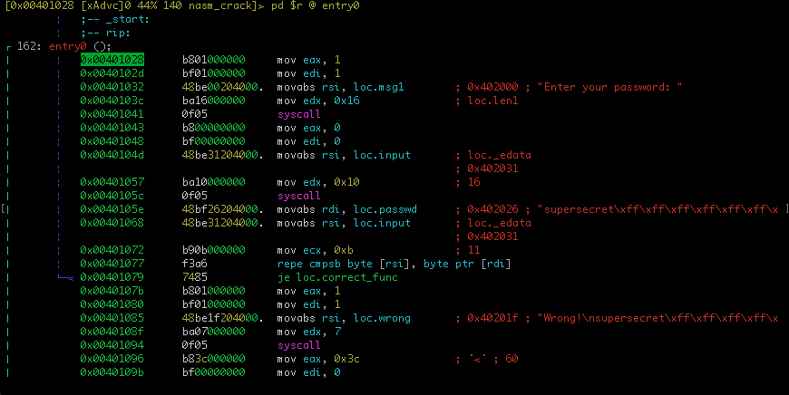
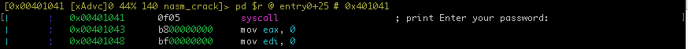
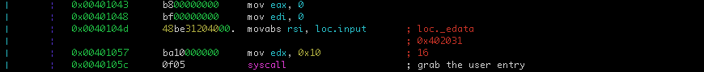
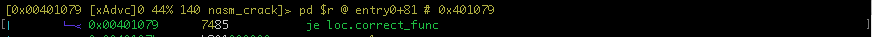
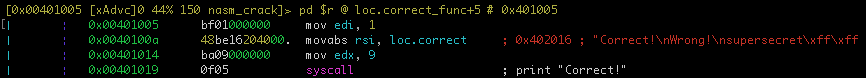

Solution for BitFriends' nasm crack
mara mara@localhost.local
Analysis
The goal will find the "correct" message and it's a 64 bits program..
Take radare21, to analyze the binary.
NOTE: please use the git version of radare2 to be up to date
$ r2 nasm_crack
-- git blind --hard
[0x00401028]>
Don't forget, use aaa option to disassemble the crackme.
The entry point with Cutter is named by a flag entry0
NOTE: a flag is a litteral or a identifier in a radare jargon
[0x00401028]> aaa
[x] Analyze all flags starting with sym. and entry0 (aa)
[x] Analyze function calls (aac)
[x] Analyze len bytes of instructions for references (aar)
[x] Check for objc references
[x] Check for vtables
[x] Type matching analysis for all functions (aaft)
[x] Propagate noreturn information
[x] Use -AA or aaaa to perform additional experimental analysis.
[0x00401028]>
To navigate efficiently in the code, we can use Vp command.
[0x00401028]> Vp
TIP: we can navigate with
arrowkeys orh,j,k,lkeys like in VIM text editor.

According to linux-x64-syscall-table2, the code between 0x401028 and 0x401041, print the message "Enter your password: ".
Add a comment at 0x401041, by pressing ; key an validate it by enter/return key.

The code between 0x401043 and 0x40105c, grab the user entry.
The user entry string will be a length of 16 characters.

The code between 0x40105e and 0x401077 compare the content of address pointed by rsi and rdi until ecx will be equals to zero or a characters is different during the loop iteration. If all characters are equals the je nmemonic at 0x401079 will be taken.

To jump, on this line, press enter/return key to jump at loc.correct_fun

TIP: to return before the jump press the
ukey.
Great, if so the answer is the value pointed by rdi, so loc.passwd.
The right value is supersecret.
https://rada.re
https://blog.rchapman.org/posts/Linux_System_Call_Table_for_x86_64/